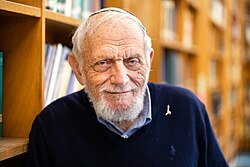

Harry Furstenberg | |
|---|---|
הארי פירסטנברג | |
 | |
| Born | September 29, 1935 |
| Citizenship | Israel American |
| Education | Yeshiva University (BA, MS) Princeton University (PhD) |
| Known for | Proof of Szemerédi's theorem IP set Evenly spaced integer topology Furstenberg–Sárközy theorem Furstenberg boundary Furstenberg's proof |
| Awards | Abel Prize[1] Israel Prize Harvey Prize Wolf Prize |
| Scientific career | |
| Fields | Mathematics |
| Thesis | Prediction theory (1958) |
| Salomon Bochner | |
Doctoral students | Alexander Lubotzky Vitaly Bergelson Shahar Mozes Yuval Peres Tamar Ziegler |
Hillel "Harry" Furstenberg (Hebrew: הלל (הארי) פורסטנברג; born September 29, 1935) is a German-born American-Israeli mathematician and professor emeritus at the Hebrew University of Jerusalem. He is a member of the Israel Academy of Sciences and Humanities and U.S. National Academy of Sciences and a laureate of the Abel Prize and the Wolf Prize in Mathematics. He is known for his application of probability theory and ergodic theory methods to other areas of mathematics, including number theory and Lie groups.
Furstenberg was born to German Jews in Nazi Germany, in 1935 (originally named "Fürstenberg"). In 1939, shortly after Kristallnacht, his family escaped to the United States and settled in the Washington Heights neighborhood of New York City, escaping the Holocaust.[2] He attended Marsha Stern Talmudical Academy and then Yeshiva University, where he concluded his BA and MSc studies at the age of 20 in 1955.[3] Furstenberg published several papers as an undergraduate, including "Note on one type of indeterminate form" (1953) and "On the infinitude of primes" (1955). Both appeared in the American Mathematical Monthly, the latter provided a topological proof of Euclid's famous theorem that there are infinitely many primes.
Furstenberg pursued his doctorate at Princeton University under the supervision of Salomon Bochner. In 1958 he received his PhD for his thesis, Prediction Theory.[4]
From 1959–1960, Furstenberg served as the C. L. E. Moore instructor at the Massachusetts Institute of Technology.[5]
Furstenberg got his first job as an assistant professor in 1961 at the University of Minnesota. Furstenberg was promoted to full professor at Minnesota but moved to Israel in 1965 to join at Hebrew University's Einstein Institute of Mathematics. He retired from Hebrew University in 2003.[6] Furstenberg serves as an Advisory Committee member of The Center for Advanced Studies in Mathematics at Ben Gurion University of the Negev.[4]
In 2003, Hebrew University and Ben-Gurion University held a joint conference to celebrate Furstenberg's retirement. The four-day Conference on Probability in Mathematics was subtitled Furstenfest 2003 and included four days of lectures.[7]
In 1993, Furstenberg won the Israel Prize and in 2007, the Wolf Prize in mathematics. He is a member of the Israel Academy of Sciences and Humanities (elected 1974),[8] the American Academy of Arts and Sciences (international honorary member since 1995),[9] and the U.S. National Academy of Sciences (elected 1989).[10]
Furstenberg has taught generations of students, including Alexander Lubotzky, Yuval Peres, Tamar Ziegler, Shahar Mozes, and Vitaly Bergelson.[11]
Furstenberg gained attention at an early stage in his career for producing an innovative topological proof of the infinitude of prime numbers in 1955.
In a series of articles beginning in 1963 with A Poisson Formula for Semi-Simple Lie Groups, he continued to establish himself as a ground-breaking thinker. His work showing that the behavior of random walks on a group is intricately related to the structure of the group—which led to what is now called the Furstenberg boundary—has been hugely influential in the study of lattices and Lie groups.[6]
In his 1967 paper, Disjointness in ergodic theory, minimal sets, and a problem in Diophantine approximation, Furstenberg introduced the notion of 'disjointness,' a notion in ergodic systems that is analogous to coprimality for integers. The notion turned out to have applications in areas such as number theory, fractals, signal processing and electrical engineering.
In 1977, he gave an ergodic theory reformulation, and subsequently proof, of Szemerédi's theorem. This is described in his 1977 paper, Ergodic behavior of diagonal measures and a theorem of Szemerédi on arithmetic progressions. Furstenberg used methods from ergodic theory to prove a celebrated result by Endre Szemerédi, which states that any subset of integers with positive upper density contains arbitrarily large arithmetic progressions. His insights then led to later important results, such as the proof by Ben Green and Terence Tao that the sequence of prime numbers includes arbitrary large arithmetic progressions.
Furstenberg proved unique ergodicity of horocycle flows on compact hyperbolic Riemann surfaces in the early 1970s. The Furstenberg boundary and Furstenberg compactification of a locally symmetric space are named after him, as is the Furstenberg–Sárközy theorem in additive number theory.
In 1958, Furstenberg married Rochelle (née) Cohen, a journalist and literary critic. Together they have five children and sixteen grandchildren.[6]
{{cite journal}}: CS1 maint: DOI inactive as of September 2025 (link)
{{cite journal}}: CS1 maint: DOI inactive as of September 2025 (link)
{kind=link}